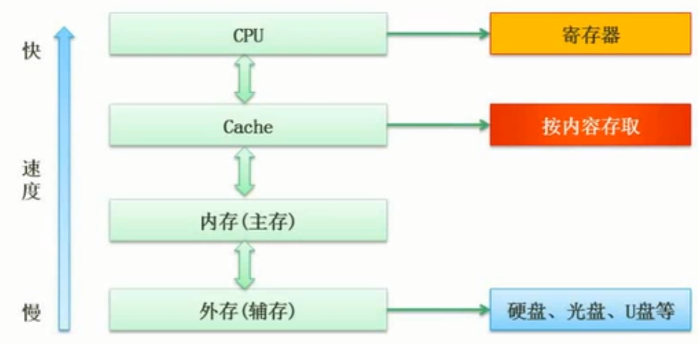
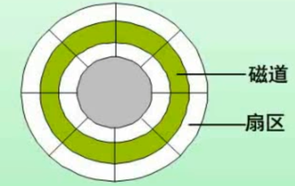

Exam | Day4 存储系统
层次化存储结构

- CPU中的寄存器：最快，但容量小，成本高
- Cache：高速缓存，缓解 CPU 与内存之间的速度不匹配【按内容存取，可以提高存取速度】
- 内存：分为随机存储器 RAM 和只读存储器 ROM
- 外存：例如硬盘，U 盘等
快的容量小，慢的容量大。
层次化存储结构可以提高系统性能，主要依据是局部性原理【空间/时间局部性】。
Cache
-
功能：CPU与内存之间的读取速度差距很大，利用 Cache 作为缓存，突破CPU与存储系统之间数据传送的带宽限制。
-
Cache 改善系统性能的依据是基于程序的局部性原理。
局部性原理是指CPU访问存储器时，无论是存取指令还是存取数据，所访问的存储单元都趋于聚集在一个较小的连续区域中
-
Cache 的命中率 h：CPU先从 Cache 中读取数据，如果数据不在 Cache 中，那么再访问内存读取数据。表示Cache的周期时间，表示主存储器的周期时间，以读操作为例，使用“Cache+主存储器”的系统平均周期为。则 。
-
Cache 地址映射
Cache 是内存的一种映射。如何判断该数据是否在 Cache 中，涉及到了 Cache 的地址映射方式。常见的映射方法有如下3种：
- 直接映射：冲突高，访问速度快
- 全相联映射：冲突低，查询麻烦
- 组相连映射：上述两种的折中方案
-
Cache 的更新策略
cache更新策略是指当发生 Cache 命中时，写操作应该如何更新数据。分为以下2种方式：
- 写直达：要写 Cache 时，数据同时写回主存。Cache 和主存的数据始终保持一致。
- 写回：CPU 修改 Cache 的某一行后，相应的数据并补立即写回主存。只当该 Cache line 被替换时并且数据发生修改时【Cache line 中会有一个 bit 位记录数据是否被修改过，称之为dirty bit】，才把数据写入到主存中。cache和主存的数据可能不一致。
主存
-
分类：
- 随机存储器：例如内存等，特点是一旦断电，数据就被清除
- 只读存储器：例如磁盘，可以持久存储数据
-
主存的编址
- 按字编址: 存储体的存储单元是字，即最小寻址单位是一个字【字，指机器字长，32位计算机为64位】
- 按字节编址：存储体的存储单元是字节，即最小寻址单位是一个字节 B【字节 B，表示固定的长度，为8 bit】
例题：内存地址从 AC000H到 C7FFFH，共有 K 个地址单元，如果该内存地址按字（16bit）编址，由28片存储器芯片构成。已知构成此内存的芯片每片有16K个存储单元，则该芯片每个存储单元存储 位
磁盘

磁盘的读取时间 = 寻道时间 + 旋转延迟时间 + 数据读取时间
其中寻道时间为磁头移动到目标磁道所需要的时间；旋转延迟时间为磁头移动到目标扇区所要的时间，一般取平均；
例题：假设某磁盘的每个磁道划分成11个物理块，每块存放1个逻辑记录。逻辑记录 存放在同一个磁道上，记录的存放顺序如下表所示：
物理块 1 2 3 4 5 6 7 8 9 10 11 逻辑记录 如果磁盘的旋转周期为33ms，磁头当前处在 的开始处。若系统使用单缓冲区顺序处理这些记录，每个记录处理时间为3ms，则处理则11个记录的最长时间为 ms；若对信息存储进行优化分布后，处理11个记录的最少时间为 ms
总线
一条总线同一时刻仅允许一个设备发送，但允许多个设备接收
可以分为3种类型：
- 数据总线 DB(Data Bus)：在 CPU 和 RAM 之间来回传送需要处理或是需要存储的数据
- 地址总线(Address Bus)：用来指定 RAM 中存储数据的地址
- 控制总线(Control Bus)：将微处理器控制单元(Control Unit)的信号，传送到周边设备